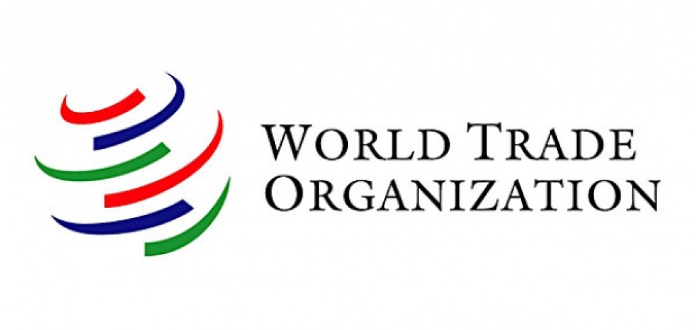
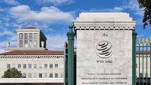

Gwynne 92/24
 
WTO dengan singkatan World Trade Organization mempunyai tujuan untuk meningkatkan hubungan negara-negara melalui perdagangan bebas. Lalu, WTO juga mempunyai tugas untuk mengatur dan mengelola kebijakan perdagangan internasional. WTO didirikan pada tanggal 1 Januari 1995, mempunyai kantor pusat di Jenewa, Swiss. Salah satu program WTO adalah WTO Young Professionals Programme yang diadakan pada tahun 2016 sebagai kesempatan supaya orang-orang muda dapat bekerja di WTO dan mengenali masalah perdagangan internasional.
Hubungan WTO dengan Indonesia
Indonesia masuk ke dalam anggota WTO pada tanggal 1 Januari 1995. Di Indonesia, WTO bertugas untuk memantau perdagangan bebas secara internationals. WTO mempunyai beberapa peraturan yang Indonesia harus ikuti yaitu GATT (General Agreement on Tariffs and Trade), GATS (General Agreement on Trade in Services), TRIPS (Agreement on Trade-Related Aspects of Intellectual Property Rights), AoA ( Agreement on Agriculture). Dengan itu, WTO memberikan banyak sekali manfaat bagi Indonesia. Salah satunya adalah akses ke pasar internasional. Dengan begitu, Indonesia mendapatkan akses yang mudah untuk jual beli secara internasional.
Kamboja masuk menjadi anggota WTO pada tanggal 13 Oktober 2004. Sama halnya dengan Indonesia, Kamboja juga wajib mengikuti peraturan atau agreements yang dibuat dengan WTO jika ingin berpartisipasi kedalam WTO. Kamboja sangat amat dibantu oleh WTO dengan cara perbanyak investasi, pasar international yang lebih bervariatif, dan hal lainnya. Namun oleh karena itu, tentu semua negara mempunyai tantangan masing-masing. Tantangan Kamboja dalam hal WTO adalah persaingan pasar international Kamboja dengan negara lain tentunya meningkat.
WTO Agreements WTO Functions WTO WTO Cambodia